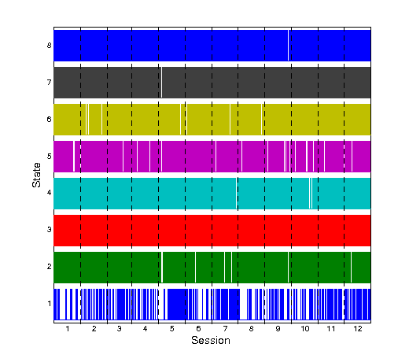
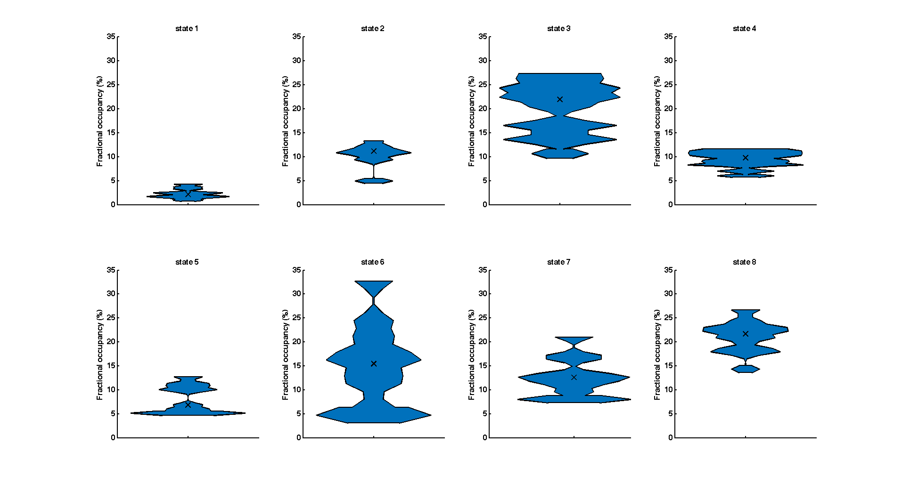
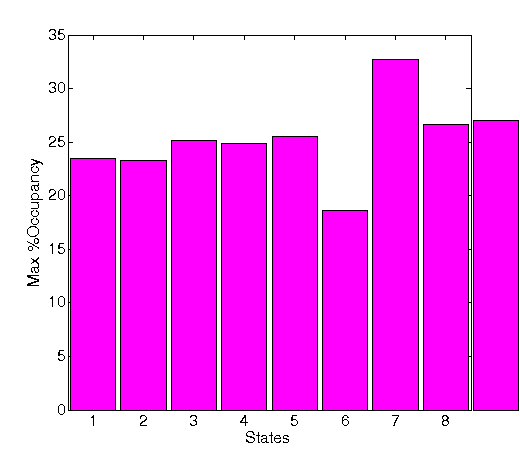
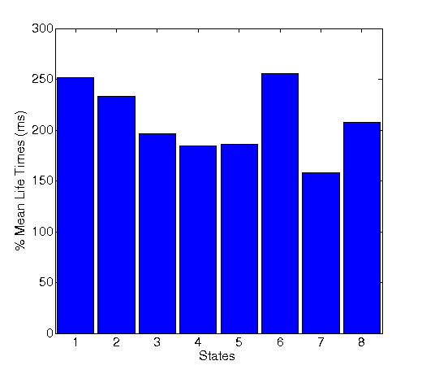
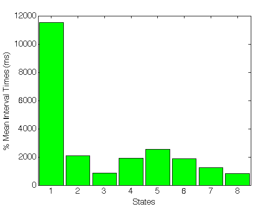
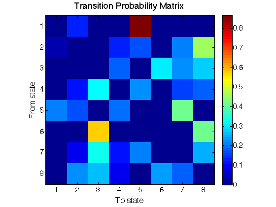

Contents
Estimate a whole-brain HMM model with GLEAN
% This example shows how to use the HMM to infer transient states % in whole-brain resting state MEG data, such that the states reflect % distinct, recurrent patterns of power % and functional connectivity (in terms of power correlation). % For this, we will use GLEAN, a tool offering a wrap of functionalities % and internally using the HMM-MAR toolbox (which will be covered in the next practical) % for the final estimation. % GLEAN does a number of things for us before calling to the HMM-MAR: % % 1.- Bandpass-filtering: we would be discarding very slow and very fast frequencies, % although we also could use it to focus on a particular band of interest. % % 2.- Getting power time courses: using the Hilbert transform we will get rid of the phase, % information, producing time series that reflect only the changes on power. % % 3.- Subsampling: because power changes are slow, we can afford subsampling the data to reduce % the computational load without losing statistical power on the estimation. % % 4.- Applying a parcellation: mapping the data (deployed on a regular grid of 3D points) % onto a number of time series, each corresponding to a different brain region (uses ROInets). % % 5.- Leakage correction: because of the artefactual high correlation between proximal regions, % we orthogonalise the data such that the remaining connectivity is genuine (uses ROInets).
% Directory of the data data_dir = fullfile(osldir,'example_data','glean_example'); % Name for this GLEAN analysis: glean_name = fullfile(osldir,'example_data','glean_example','glean_demo.mat'); % Set do_analysis=1 to re-run the analysis, otherwise use precomputed result do_analysis = 0; % We specify a list of data files. % These data consist of 2 sessions of 10 minutes of % eyes open resting state data recorded from 6 subjects on an Elekta % Neuromag system (using the 204 planar gradiometers only). The data were % band-pass filtered between 4 and 30 Hz and projected onto a regular 8 mm % grid in source space using an LCMV beamformer. The data are saved as % SPM12 MEEG objects in sensor space, and the beamformer weights are saved % as a virtual montage. data = {'/data/s01_rest1.mat','/data/s01_rest2.mat','/data/s02_rest1.mat',... '/data/s02_rest2.mat','/data/s03_rest1.mat','/data/s03_rest2.mat',... '/data/s04_rest1.mat','/data/s04_rest2.mat','/data/s05_rest1.mat',... '/data/s05_rest2.mat','/data/s06_rest1.mat','/data/s06_rest2.mat'}; data = fullfile(data_dir,data);
Now we configure GLEAN toolbox to work on our data. This is done basically by setting a Matlab struct with all the options. This struct is layed out at different levels, each referring to one of the aforementioned processing and training steps.
settings = struct;
Envelope settings: related to how to obtain the power time series from the data and applying subsampling
settings.envelope.overwrite = 0; settings.envelope.log = 0; settings.envelope.fsample = 20; % we will get the data subsampled to this frequency settings.envelope.mask = fullfile(data_dir,'MNI152_T1_8mm_brain.nii.gz');
Subspace settings: these options refer to the parcellation applied to the data and also includes the setting for leakage correction
settings.subspace.overwrite = 0; settings.subspace.normalisation = 'none'; % whether we will normalise the data (mean 0, std 1) settings.subspace.parcellation.file = fullfile(data_dir,'fMRI_parcellation_ds8mm.nii.gz'); settings.subspace.parcellation.orthogonalisation = 'symmetric'; % method used for leakage correction settings.subspace.parcellation.method = 'spatialBasis'; % method used for the parcellation
Model settings: these options refer to HMM configuration. The most important choice is the number of states.
settings.model.overwrite = 0; settings.model.hmm.nstates = 8; % no. of states settings.model.hmm.nreps = 1; % no. of repetitions (we will keep the best according to the free energy)
With everything set, we can then proceed to run the analysis
% Set up the GLEAN settings, data paths etc: GLEAN = glean.setup(glean_name,data,settings); % Run GLEAN if do_analysis glean.run(GLEAN) save(glean_name,'GLEAN') end
Using default values for dir, freqbands in GLEAN.envelope.settings Using default values for dir in GLEAN.subspace.settings Using default values for dir in GLEAN.model.settings Using default values for dir in GLEAN.results.settings
Interrogating the results
% Load and interrogate the results
load(glean_name)
we first look at the basic temporal information: state time courses and life times
% show the entire state time courses
glean.plot_timecourse(GLEAN)
 By zoom in to, for example, a time range between 6 and 6.5 seconds, it can be qualitatively noticed that the state visits are quite short, suggesting a quite fast time scale of network switching in the brain "at rest". We will look at it quantitatively below.
We next compute temporal properties related to the estimation This includes a calculation, per state, of: - the number of occurrences, or state visits. - the fractional occupancy: how much time is state is visited in proportion. - the mean life time: how much time, on average, the state visits last. - the mean interval length: how much time, on average, passes between two consecutive ocurrences of a state. - the entropy of the state time course
settings = struct('plot',0); GLEAN = glean.temporal_stats(GLEAN,settings); % We show the fractional occupancy - states 3 and 8 are the most frequent, % whereas state 1 is the rarest. figure bar(mean(GLEAN.results.temporal_stats.FractionalOccupancy.stats),0.9,'FaceColor','r') ylabel('%Occupancy','FontSize',16) xlabel('States','FontSize',16) set(gca,'FontSize',16) xlim([0.5 8.5])
Computing statistics for Number of occurrences Computing statistics for Fractional occupancy Computing statistics for Mean life time Computing statistics for Mean interval length Computing statistics for Entropy
% As a sanity check, it is interesting to look at the maximum fractional occupancy for every % subject. If this is high (say, >50%) for a given subject, % that means that one single state is dominating the time series for that subject, % which implies that the dynamics for that subject have not been well captured. % Here, we observe that the maximum fractional occupancy never surpass 35%, % meaning that all states take 35% or less of the time per subject. figure bar(max(GLEAN.results.temporal_stats.FractionalOccupancy.stats,[],2),0.9,'FaceColor','m') ylabel('Max %Occupancy','FontSize',16) xlabel('States','FontSize',16) set(gca,'FontSize',16) xlim([0.5 12.5])
% We show the mean life times, seeing the states ocurrences are indeed quite fast, % with visits usually in between 150 and 250 ms. figure bar(mean(GLEAN.results.temporal_stats.MeanLifeTime.stats),0.9,'FaceColor','b') ylabel('% Mean Life Times (ms)','FontSize',16) xlabel('States','FontSize',16) set(gca,'FontSize',16) xlim([0.5 8.5])
% We can look at the interval times, which oscillate in between 1 and 2.5s, % with the exception of state 1, which is to be expected considering is an usual state. figure bar(mean(GLEAN.results.temporal_stats.MeanIntervalLength.stats),0.9,'FaceColor','g') ylabel('% Mean Interval Times (ms)','FontSize',16) xlabel('States','FontSize',16) set(gca,'FontSize',16) xlim([0.5 8.5])
% Finally, we can look at the transition probability matrix between % states. We remove the diagonal because we want to focus on the % transitions Psubject = glean.state_transitions(GLEAN); Pgroup = zeros(8); for j = 1:length(Psubject) Psubject{j}(eye(8)==1) = 0; % Normalise probabilities such that they sum up to 1 for k=1:8, Psubject{j}(k,:) = Psubject{j}(k,:) / sum(Psubject{j}(k,:)); end Pgroup = Pgroup + Psubject{j} / length(Psubject); end figure imagesc(Pgroup); colorbar; axis square set(gca,'xtick',1:8) set(gca,'ytick',1:8) ylabel('From state','FontSize',16) xlabel('To state','FontSize',16) title('Transition Probability Matrix','FontSize',18) set(gca,'FontSize',15)
Finally, after we have looked at the temporal information of the states, we will look at the spatial information, that is, we estimate the spatial maps for each state.
% In particular, the function "glean.pcorr" will create spatial maps for each state % by computing the partial correlation between each session's state time % courses and the envelope data at each voxel. These maps may be output % as .nii files (or alternatively as .mat files), and may be computed using % the voxelwise or parcelwise data: settings = []; settings.format = 'nii'; settings.space = {'parcel'}; GLEAN = glean.pcorr(GLEAN,settings); % This results field contains the settings, as well as pointers to the spatial maps in % each subspace (voxel/parcel) for each session and the group average. % We can then use fslview to open the maps. % Some well-known resting state networks include the Sensorimotor network (state 4), % or the visual network (state 2) fslview(GLEAN.results.pcorr.parcel.sessionmaps{1},[])
Saving parcel partial correlation maps for session 1 Saving parcel partial correlation maps for session 2 Saving parcel partial correlation maps for session 3 Saving parcel partial correlation maps for session 4 Saving parcel partial correlation maps for session 5 Saving parcel partial correlation maps for session 6 Saving parcel partial correlation maps for session 7 Saving parcel partial correlation maps for session 8 Saving parcel partial correlation maps for session 9 Saving parcel partial correlation maps for session 10 Saving parcel partial correlation maps for session 11 Saving parcel partial correlation maps for session 12 Saving parcel group partial correlation map